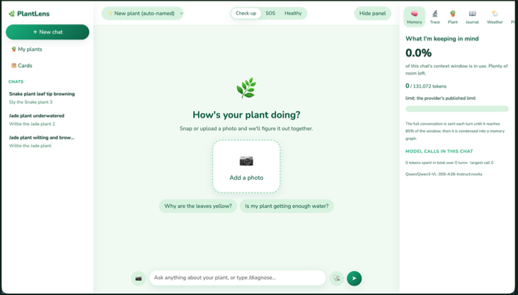
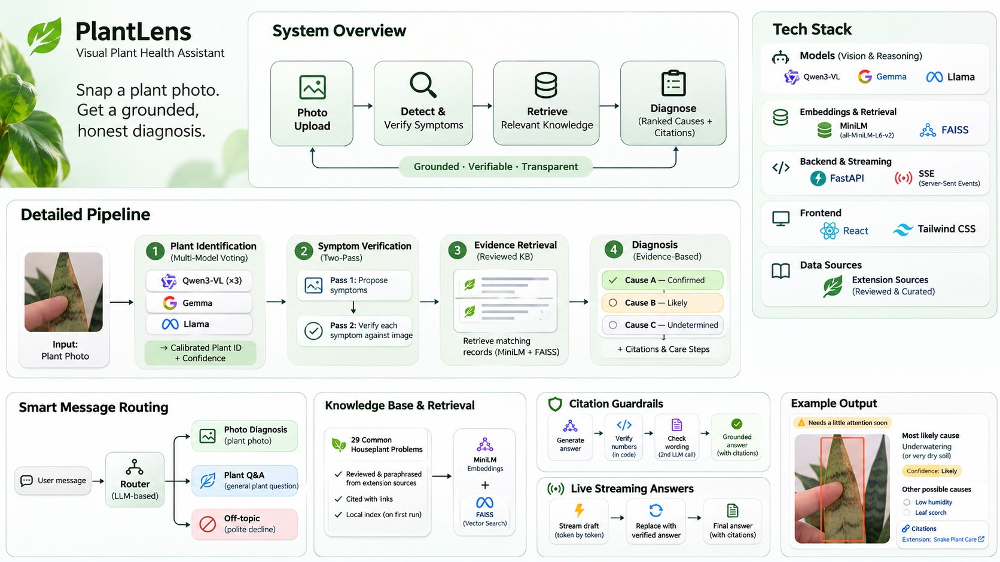

Project 02 · Oct 2026
PlantHelp
Snap a photo of a sick plant and get the likely causes, checked against a knowledge base instead of guessed.
How it looks

Click the image to open it full size.
Architecture

Click the image to open it full size.
How it works
The problem
Plant owners can rarely tell what is wrong from a photo, and general chatbots answer confidently even when they are guessing.
How it works
A router sends each message down the right path. For a photo, the vision model lists symptoms, each symptom is re-checked against the image, a local knowledge base is searched, and the reply gives 2–4 possible causes. Next steps and sources are written by code from the retrieved records, not from model memory.
Honest plant ID
Three looks from Qwen3-VL plus votes from Gemma and Llama. Confidence is high only when every model family agrees; otherwise it asks you to confirm instead of inventing a name.
Guardrails
Care answers must cite a knowledge-base record that actually supports them (numbers checked in code, wording by a second model call). If none exists it searches trusted sites and links them, or says it cannot confirm.
Extras
Yes/no follow-up questions mark a diagnosis confirmed, likely or undetermined. Also a plant journal, progress between check-ups, a weather-impact check and streaming replies. MIT licensed, can run fully local with Ollama or vLLM, offline tests in CI.